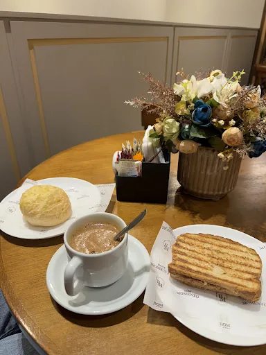
01Para começar bem
Cappuccino artesanal
O protagonista da casa, cremoso e feito para beber sem correria.
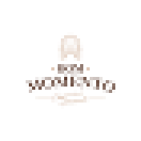
BOM MOMENTOCAPPUCCINO ARTESANAL Ver cardápio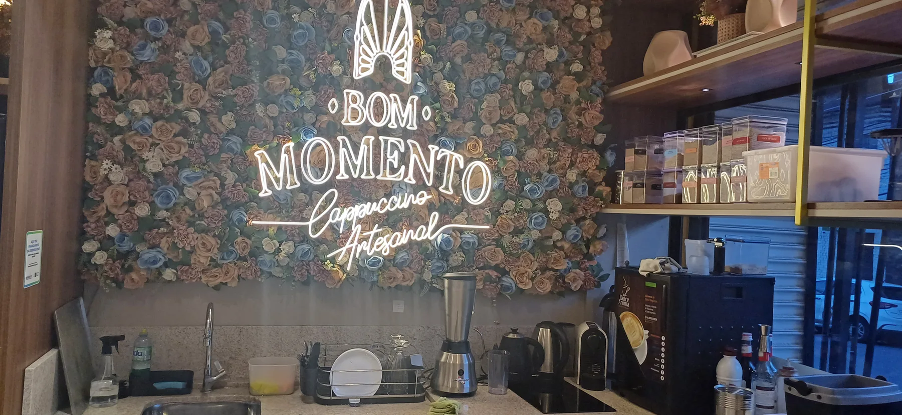
Cafeteria artesanal em Cuiabá
Cappuccinos artesanais, comidinhas com gosto de casa e um espaço criado para desacelerar por alguns minutos.
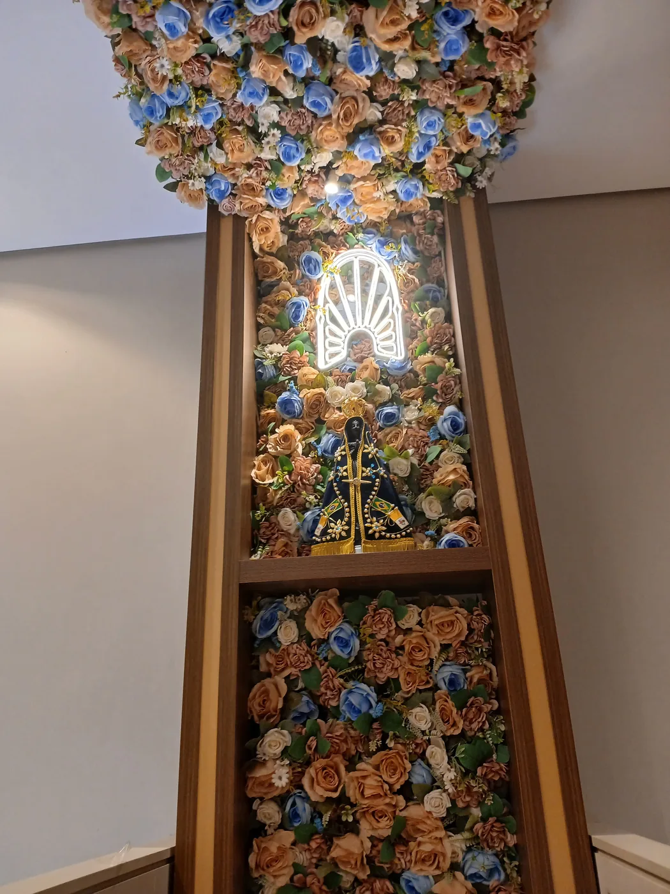
A casa
A Bom Momento nasceu com uma ideia simples: transformar uma xícara de cappuccino em experiência.
O ambiente mistura madeira, flores, luz quente e pequenos detalhes de casa. É o tipo de lugar em que o café chega e, estranhamente, a pressa vai embora. Milagre civilizatório raro.
Sabores & momentos

01O protagonista da casa, cremoso e feito para beber sem correria.
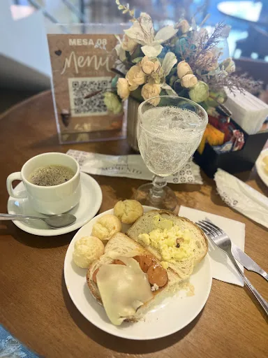
02Combinações para transformar café em refeição e conversa em programa.
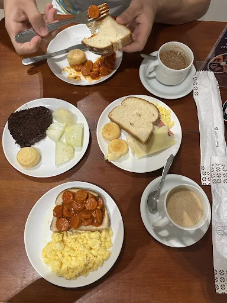
03Lanches, pães e acompanhamentos para chegar à mesa ainda quentinhos.
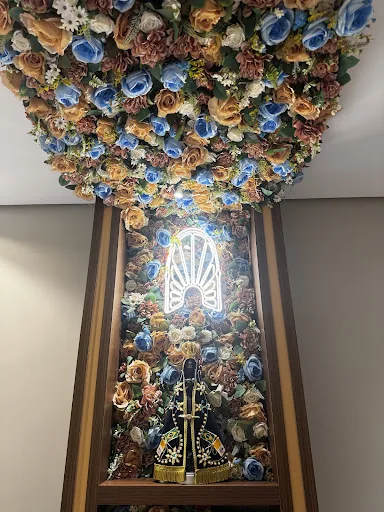
04Do clássico ao cremoso, sempre com a mesma desculpa socialmente aceita para ficar mais 20 minutos.
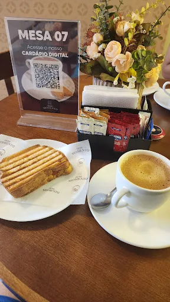
05Para acompanhar o café ou justificar um segundo. A humanidade evoluiu para isso.
Presença
Flores, tons terrosos, dourado, madeira e luz quente formam uma identidade elegante sem ficar engessada.
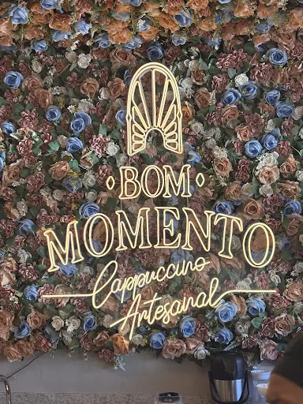
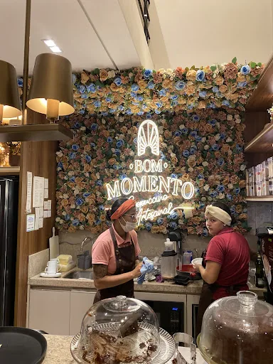
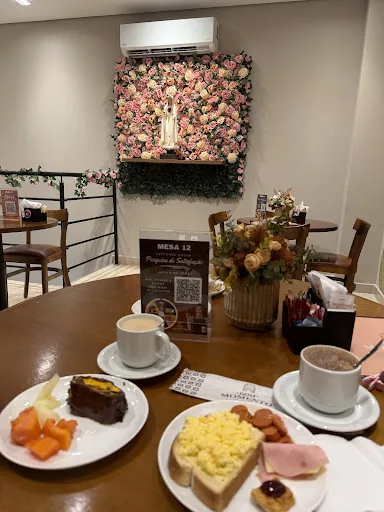
Galeria
Arraste para o lado. Sem carrossel possuído, prometo.
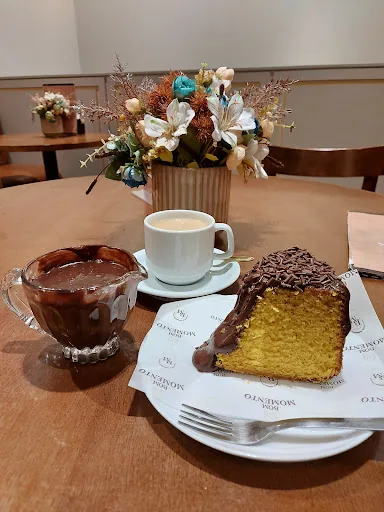
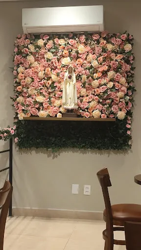
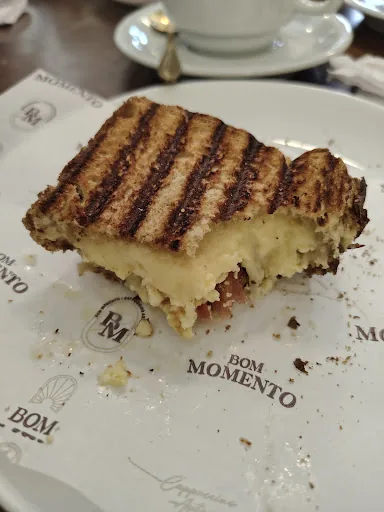
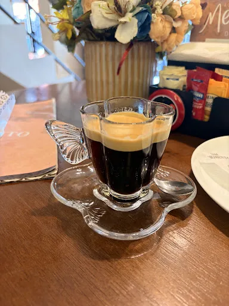
Quem já viveu o momento
“Comida deliciosa e atendimento excelente.”
“Os bolos são maravilhosos. Os cafés muito delicioso.”
“Atendimento impecável, local agradável com decoração linda e qualidade insuperável. Os cappuccinos são simplesmente maravilhosos!”
“Ambiente extremamente agradável, acolhedor e tranquilo. O atendimento é excelente.”
“Loja com muitos cappuccinos de sabores variados, ambiente lindo e muito bem decorado.”
Venha viver o seu
EndereçoR. Ten. Eulálio Guerra, 822 — Sala 02
Araés, Cuiabá — MT, 78005-505
Contato(65) 99685-3930
HoráriosSeg a sáb · 07:00–19:00
Domingo · 07:00–12:00